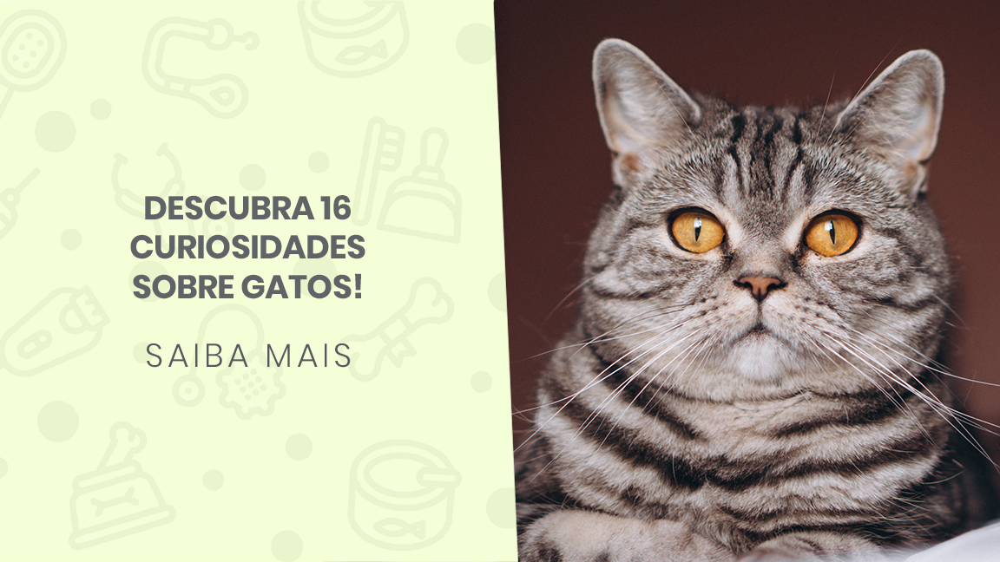

CURIOSIDADES SOBRE OS GATINHOS!

1- Em média um gato passa 2/3 do dia a dormir. Isso significa que em 9 anos de vida, apenas está acordado
3 anos!
2- Os gatos não saboreiam o doce.
3- Quando um gato persegue uma presa, ao contrário de um cão ou humano, mantém a cabeça sempre para baixo.
4- As bolas de pelso que vomitam chama-se egagropilos.
5- As gatas tendem a ser dextras, enquanto os gatos tendem a ser maioritariamente esquerdinos.
6- Um gato faz cerca de 100 sons diferentes,enquanto um cão faz cerca de 10.
7- Existem mais de 500 milhões de gatos domésticos no mundo, e aproximadamente 40 raças reconhecidas.
8- Um gato consegue correr a 49km por hora, em curtas distâncias.
9- Um gato salta 5 vezes a sua altura num único salto.
10- Na Austrália e no Reino Unido,os gatos pretos são sinal de boa sorte.
11- A raça mais popular de gatos é a persa, seguida pela Maine Coon e Siamesa.
12- A raça mais pequena de gatos é a Singapura que pesa cerca de 1,8 kg.
13- A raça maior de gatos é a Maine Coon, em que um gato pode pesar cerca de 12kg.
14- Um gato tem geralmente 12 bigodes em cada lado da face.
15- Um gato pode rodar a sua orelha em 180 graus.
16- Um gato tem cerca de 130,000 pelos por cm2.